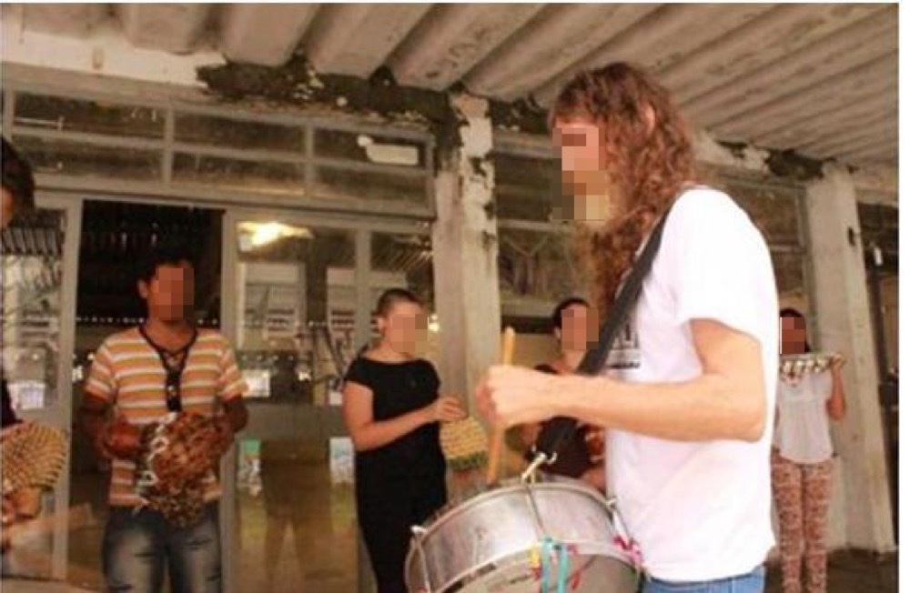
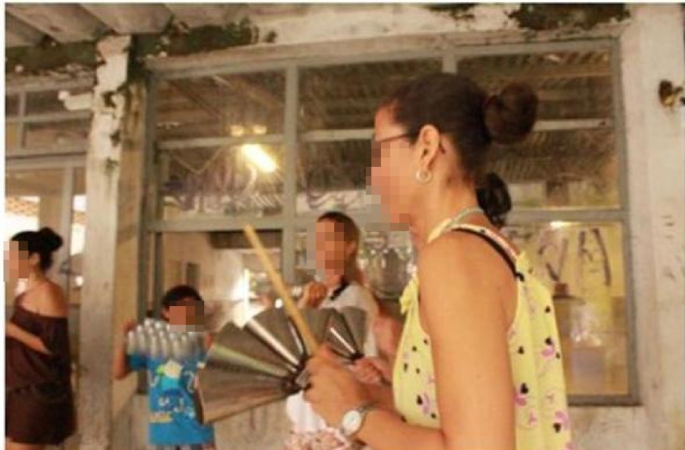

Grupo Coró de Pau: Cultura, Patrimônio e Experiências Compartilhadas no Ciberespaço
O meio técnico-científico-informacional em que vivemos nos induz à lógica da globalização hegemônica que estabelece parâmetros determinantes da vida em sociedade. Os meios de comunicação impõem-nos a cultura urbano-industrial, que marginaliza pequenos grupos urbanos sociais que disseminam a cultura popular, tal qual a Associação Coró de Pau, tema deste trabalho. A mídia hegemônica dita verdades sobre esses grupos que culminam em processos de exclusão, preconceitos e estereótipos. O uso das novas tecnologias de informação e comunicação pelo próprio grupo, entretanto, pode servir como instrumento para fortalecer o trabalho e a identidade coletiva do grupo de percussão popular, uma vez que os integrantes do Bloco Coró de Pau se apropriem dele para construir e disseminar sua própria autoimagem. Para ampliar o aumento da visibilidade local aos olhos do global, os produtos gerados pelas novas mídias digitais e o ciberespaço serão parceiros na democratização dos meios de comunicação, em uma perspectiva de construção de uma globalização contra-hegemônica. As ações de intervenção descritas neste relatório foram desenvolvidas nessa perspectiva.
Palavras-chave: Comunicação Democrática, Cultura Popular, Globalização Contra-hegemônica.
Aluna: Ana Clara Gomes Costa
Polo: Alto Paraíso
Orientadora Acadêmica: Rosaura de Oliveira Vargas das Virgens
Coordenadora de orientação: Ivanilda Aparecida Andrade Junqueira
INTRODUÇÃO
A partir do pressuposto que a mídia hegemônica institui processos de espetacularização da cultura popular, deturpando a imagem e a identidade de grupos sociais que tentam manter e difundir suas práticas e identidade coletiva , ou mesmo levando em conta que os grandes veículos de comunicação invisibilizam esses movimentos culturais e, por vezes, os silenciam, faz-se necessário buscar uma comunicação contra-hegemônica que corrobore para a valorização do patrimônio imaterial pelo qual estes grupos trabalham firme para manter e difundir.
Neste trabalho, a expressão mídia hegemônica representa os grandes conglomerados de empresas de comunicação, inseridos em uma perspectiva mercadológica da venda de informações.
A construção da identidade de um povo provém de elementos históricos, geográficos e biológicos, das instituições produtivas e reprodutivas, da memória coletiva, dos aparatos de poder e das crenças religiosas. Esses elementos são processados pelos indivíduos, pelos grupos sociais, bem como pelas sociedades, que adéquam seu significado em uma estrutura social e em uma visão de espaço e tempo (CASTELLS, 1999). Desta forma, todos esses conteúdos simbólicos contribuem para que a identidade coletiva de um povo seja construída.
Condiz com uma comunicação alternativa, popular e democrática.
Em Goiânia, a Associação Coró de Pau realiza um trabalho amplo e significativo no universo da cultura popular, no âmbito da música e dos ritmos populares brasileiros. A associação mobiliza um professor, ou um mestre, como é chamado pelos envolvidos no processo, e faz da percussão um objeto-meio de transformação e formação cidadã.
A sede do Diretório Central dos Estudantes (DCE) da Universidade Federal de Goiás (UFG) foi cedida ao coletivo do Grupo Coró de Pau para a disseminação da arte de tocar tambor. No local, além de oficinas, ensaios e muito batuque, são construídos os instrumentos para que as pessoas da comunidade em geral possam simplesmente chegar, aprender e se apropriar do saber ali presente e que é repassado há mais de 10 anos a quem tem interesse. O grupo já formou informalmente dezenas de músicos que chegaram sem compromisso e acharam nos batuques uma profissão.
100
Os objetivos de Mestre Alemão e de sua esposa Geovanna de Castro, responsáveis pela Associação Coró de Pau, culminam em um só ponto: elencar a cultura popular da música de tambor ao seu real valor de patrimônio social. O aprendizado no grupo não se dá somente pelas aulas e oficinas, mas também pelo convívio e pela troca de experiências que permite ao grupo, pelo processo dialógico, promover ações de intervenção, de divulgação do trabalho desenvolvido por meio de cortejos, tocadas em eventos de rua, que acabam por concretizar ações experimentais e educativas sobre a importância do patrimônio da cultura popular.
É evidente que vários grupos e associações culturais que promovem atividades de vivências, resgate e valorização da cultura popular, seja pelo universo da música, como no caso da Associação Coró de Pau, ou da dança, ou das artes plásticas, ou da literatura, dentre tantas outras expressões que poderíamos citar, têm sempre grandes desafios pela frente e realizam um trabalho árduo – na maioria das vezes sem nenhum incentivo ou apoio financeiro nem do governo, nem de nenhuma instituição - para conseguir manter as práticas culturais nas quais acreditam. O duro trabalho que esses grupos realizam fica relegado, muitas vezes, a um alcance local e, com pouco reconhecimento ou pela falta de incentivo, podem estar fadados ao fim, deixando para trás patrimônios que poderiam ter sidos preservados ou reavivados por meio dessas ações.
É na perspectiva da democratização midiática e da apropriação dos meios de comunicação, partindo do uso das novas tecnologias da informação e comunicação, que a intervenção junto à Associação Coró de Pau foi pensada. A ação e seus desdobramentos são relevantes, pois contribuem para a preservação das práticas da cultura popular na luta "contra a exclusão e a discriminação produzida ou intensificada pela globalização neoliberal" (SANTOS, 2006, p. 102). A proposta foi idealizada na contramão da segregação social, cultural e espacial e no contra fluxo do monopólio da fala e do discurso - expresso pela mídia hegemônica -, que silencia, pela comunicação urbano-industrial, as vozes das minorias sociais. Pensar na apropriação dos meios de comunicação e no uso de novas tecnologias para disseminar uma comunicação alternativa significa a abertura de novos canais para essas minorias que não têm nenhuma garantia de acesso à mídia hegemônica para construírem suas próprias autoimagens, mantendo e valorizando suas práticas culturais.
A realização de fotos e vídeos a partir das novas tecnologias, além de ser uma autêntica forma de registro a baixo orçamento, consolida um tipo de comunicação alternativa, diante do sistema midiático hegemônico, que tem a tendência de romper com a ordem do capital e, uma vez utilizado pelas próprias comunidades ou grupos culturais, podem fazer uso do diálogo para a construção coletiva, na qual as pessoas são participantes plenas na produção e veiculação de produtos midiáticos, na perspectiva de Peruzzo (1999). A ação baseou-se na tentativa de propor uma forma pragmática de pesquisa-ação, adaptada aos procedimentos de intervenção, para que as atividades desses grupos, de resgate e vivência da cultura popular, fossem e sejam devidamente registradas e difundidas na internet. Nessa perspectiva, uma ação assim só é possível caso sua realização seja participativa e colaborativa, incluindo tanto os fundadores do projeto como os integrantes do Grupo Coró de Pau.
101
A intervenção foi planejada a partir dos pressupostos da pesquisa-ação, fundamentada por Tripp (2005), explorando a necessidade de uma documentação audiovisual e compilação de um portfólio do grupo para que, além do registro da prática proposta, esse material sirva para difundir o trabalho da associação. O objetivo único desse processo foi e é ampliar o alcance do trabalho realizado por grupos e associações, contribuindo, dessa forma, para uma conquista de visibilidade que culmine sempre na manutenção, preservação e disseminação patrimonial das manifestações da cultura popular.
DESENVOLVIMENTO
CULTURA URBANO-INDUSTRIAL E PROCESSOS DE EXCLUSÃO
Diante dos processos da globalização que nos insere no que o geógrafo Milton Santos (1997) chama de meio técnico-científico-informacional, vivemos e nos acostumamos à ideologia da produção monopolística, que, segundo Sodré (1984), nos impõe a lógica do consumo massivo regido pela sistematização do valor de troca. Ainda de acordo com Sodré (1984), esse modelo econômico, sempre voraz pelo crescimento, associa-se ao modelo cultural impositivo dos meios de comunicação de massa, que consolida a hegemonia da cultura urbano-industrial. Nessa condição, comunidades ou grupos sociais urbanos, cuja cultura advém de expressões populares, têm suas manifestações culturais expropriadas midiaticamente pelas informações ou código disseminados nos meios de comunicação hegemônicos. O resultado disso é a transformação do saber e da cultura popular em espetáculo cultural nos meios de comunicação ou simplesmente em nada. Experiências de realidades distintas do outro são convertidas em informações narradas de acordo com o reaproveitamento industrial pelo sistema midiático. A relação deturpada que a mídia traça entre o batuque, a música afro-brasileira, com a palavra macumba, no seu sentido pejorativo, é um exemplo disso. Deste modo, nega-se qualquer possibilidade de alteridade cultural, de acordo com Sodré (1984), e de uma representação identitária na perspectiva do outro.
Aliado ao controle econômico das fontes de informação, pelos veículos de comunicação de massa, está o controle ideológico da fala, que, por sua vez, relaciona-se ao controle do código e dos processos de significação, segundo Sodré (1984). Cria-se, então, realidades distorcidas sobre o outro, de acordo com o interesse das classes dominantes e se funda uma indústria de estereótipos, de invisibilidade, renegando qualquer contribuição para a difusão do patrimônio cultural das expressões populares. Os meios de comunicação que poderiam ser um instrumento de luta, de construção de uma imagem identitária, de registro, resgate e divulgação da cultura popular acabam por consagrar processos de exclusão social quando mal utilizados.
DO LOCAL AO GLOBAL: O FORTALECIMENTO DE UMA IDENTIDADE COLETIVA
Vivemos na lógica das cidades e no que Milton Santos (1997) chama de meio técnico-científico-informacional. As redes, que percorrem o espaço urbano mediante as telecomunicações, são globais e transportam a razão global à razão local. O universo criado pela globalização hegemônica outorga uma lógica dominante que se baseia no comércio livre, na democracia, na universalização dos meios de comunicação e no individualismo para consolidar a vulnerabilidade de nações, de regiões e de grupos sociais subordinados e oprimidos pela globalização neoliberal (SANTOS, 2006).
102
De acordo com Raffestin (1993), quando falamos de regiões, de grupos sociais, estamos delimitando arranjos locais que foram construídos ao longo da história e firmados por meio da territorialidade de um grupo. Só é possível pensarmos estes grupos urbanos se compreendermos sua territorialidade e sua cultura. A cidade, graças à sua configuração geográfica, pode ser pensada como palco de vários grupos urbanos, de múltiplas culturas, territorialidades e de múltiplos territórios. Por ser o lugar em que os grupos sociais projetam trabalho, energia, cultura e informação, os territórios que dividem o espaço urbano acabam por exprimir, também, relações marcadas pelo poder. A presença das minorias culturais, por um lado, ratifica as relações hierárquicas e de poder existentes no espaço urbano, mas, por outro, enriquece "a diversidade socioespacial, que tanto se manifesta pela produção da materialidade em bairros e sítios tão contrastantes, quanto pelas formas de trabalho e de vida" (SANTOS, 1997, p. 323).
Essa perspectiva da multiplicidade cultural contida na cidade não dialoga com nenhum pluralismo midiático, visto que os veículos hegemônicos de comunicação reverberam a lógica urbano-industrial que institui padrões culturais únicos e exclusivos. As produções audiovisuais da televisão e do cinema comercial engendram mais um desses setores acionados pelo avanço tecnológico requerido pelo desenvolvimento e também se investem dos elementos monopolísticos relacionados à escala de produção elevada e à busca incessante pelo domínio do mercado cultural, que não admite assimilação de culturas concorrenciais. Tais culturas são encaradas como formas marginais de existência e a sua inadmissão no sistema televisivo, por exemplo, leva o outro cultural a uma série de estereótipos sociais ou à condição de invisibilidade cultural, na medida em que recusa o diferente. Para atingir, cada vez mais, o crescimento econômico, é necessário instaurar um modelo cultural impositivo que garanta a soberania da cultura urbano-industrial e a destruição de qualquer chance de expressão da cultura popular (SODRÉ, 1984).
Em contrapartida a essa realidade, para que as culturas populares se mostrem resistentes e criem uma imagem identitária forte que as promovam, é necessário repensar uma comunicação contra-hegemônica que valorize as expressões populares e registre o patrimônio cultural de grupos minoritários responsáveis por trabalhos árduos de salvaguarda da sua cultura e territorialidade. O cinema colaborativo e de baixo orçamento, amparado pelas novas tecnologias, representa um grande passo para que haja um registro identitário e coerente com o que o grupo quer mostrar de si. Entretanto, para que essa lógica da participação ativa se instaure, é necessário, por meio da perspectiva dialógica, que o pesquisador suscite no grupo a vontade de encabeçar uma comunicação contra-hegemônica, a partir de uma produção audiovisual compartilhada, que deve ser amplamente divulgada nas redes sociais do ciberespaço.
A ideia do diálogo como uma construção elementar no processo de formação cultural do homem provém da preliminar que, para estar com o mundo e para se firmar além da sua dimensão biológica, o homem precisa relacionar-se e, assim, se tornar um ser de relações e não só de contatos (FREIRE, 1999). No universo freireano, o ato de se relacionar se dá por meio do diálogo e, portanto, pela comunicação na sua essência de relação dialógica entre pessoas. Para que o diálogo e a produção compartilhada se iniciem, é necessário que o pesquisador adentre na esfera do círculo de cultura do outro. O círculo de cultura se insere no campo da educação pensada por Paulo Freire (1987). Adentrar nele remete-se à investigação que o pesquisador deve fazer sobre o pensar do povo e essa investigação não pode ser feita sem a presença popular. Ao contrário, ela deve ser feita com o povo como sujeito de seu próprio pensar. Esse processo dialógico de investigação permite ao pesquisador, como prevê o autor, assimilar a realidade do outro, captar os níveis de sua percepção dessa realidade e perceber a sua visão do mundo. Permite, também, mergulhar na fonte de significados, experiências populares e conhecer a identidade do outro.
103
Para Castells (1999), a identidade refere-se a um processo de construção de significados baseado em um atributo cultural ou mesmo em um conjunto de atributos culturais que se relacionam. A construção da identidade de um povo provém de elementos históricos, geográficos e biológicos, das instituições produtivas e reprodutivas, da memória coletiva, dos aparatos de poder e das crenças religiosas. Esses elementos são processados pelos indivíduos, pelos grupos sociais, bem como pelas sociedades, que adéquam seu significado em uma estrutura social e em uma visão de espaço e tempo (CASTELLS, 1999). Desta forma, todos esses conteúdos simbólicos contribuem para que a identidade coletiva de um grupo seja construída.
Muitas das identidades coletivas utilizam-se da própria identidade como uma forma de resistência. O autor afirma que essa lógica é, geralmente, criada por grupos que se encontram em condições desfavorecidas, desvalorizadas, estigmatizadas e subjugadas à lógica da dominação que os excluem. A identidade de resistência é, portanto, uma forma de garantir a sobrevivência cultural, a partir de princípios diferentes dos utilizados pelas instituições da sociedade. Ela leva à formação de comunidades que, para o autor, é um dos tipos mais importantes de construção de identidade em nossa sociedade, já que elas dão origem a uma forma de resistência coletiva, diante de uma massacrante opressão que, do contrário, não seria suportável. As comunidades culturais são, desta forma, caracterizadas como uma reação às tendências sociais dominantes - em defesa dos seus elementos simbólicos identitários – e como uma forma de proteção contra um mundo hostil, servindo de refúgio e de fonte de solidariedade para os sujeitos que compartilham de valores, significados e códigos específicos de uma autoidentificação e de uma mesma identificação coletiva (CASTELLS, 1999).
Conclui-se, portanto, que a alternativa do pesquisador - imergir no círculo de cultura por meio do diálogo e, desta forma, assimilar a identidade coletiva de um povo e entender o que o outro quer mostrar de si - é um grande passo para que haja uma abertura popular às novas tecnologias e, consequentemente, ao registro e à difusão na internet dos bens culturais cultivados pela comunidade. Pelo diálogo e pela construção da confiança é que as pessoas passam a ser companheiras para, juntas, pronunciarem o mundo (FREIRE, 1987), o que resulta em uma representação audiovisual coerente, em que o grupo representado se reconheça.
ABORDAGENS METODOLÓGICAS: A INTERVENÇÃO NA ASSOCIAÇÃO CORÓ DE PAU
A partir da necessidade de pensar uma comunicação contra-hegemônica, que contribua para a salvaguarda, o registro e a divulgação do patrimônio cultural da percussão popular ao qual a Associação Coró de Pau se dedica, uma intervenção foi pensada junto ao grupo. A aproximação foi pautada pelo diálogo com o Mestre Alemão e sua esposa Geovanna de Castro, mentores e responsáveis pela associação. Segundo Gil (1999), a inserção em uma comunidade ou grupo que se quer pesquisar e, no caso deste trabalho, intervir, requer, usualmente, que o pesquisador-interventor recorra a informantes-chaves, que podem ser especialistas na temática desejada da pesquisa, ou mesmo líderes formais ou informais do grupo. Mestre Alemão e Geovanna, além de ministrarem as oficinas de percussão ao grupo aberto e em constante movimento rotativo, representam essa figura dos informantes-chave. A aproximação com os dois foi facilitada pelo fato de a pesquisadora-interventora ter participado ativamente do Grupo Coró de Pau nos últimos anos.
104
A primeira etapa da intervenção, que foi o contato e a proposição do projeto de intervenção, foi recebida com empolgação pelos responsáveis pela associação, que logo estenderam o convite aos integrantes do bloco de percussão. Em uma roda de conversa, Alemão e Geovanna pediram aos integrantes do Coró de Pau para que usassem celulares e máquinas fotográficas com a finalidade de registrar fotos e vídeos dos ensaios e, em seguida, divulgassem nas redes sociais o trabalho da equipe. A partir dessa interação, iniciou-se, então, a segunda etapa da ação proposta, que foi inspirada no método etnográfico - oriundo da antropologia pós-moderna que a proclama não como uma interpretação afirmada autoritariamente, mas como um diálogo negociado entre pesquisador e integrantes da associação – e baseada na observação participante (CALDEIRA, 1988 apud CASSIANO, 2002).
O propósito inicial, pensado com foco em uma ação interventiva com base em pressupostos de uma pesquisa-ação participante na perspectiva de Maria Amélia Santoro Franco (2005), em que os integrantes do Grupo Coró de Pau pudessem imergir em um processo de reflexão-ação, teve o objetivo de fomentar a capacidade de sujeitos históricos das pessoas participantes do grupo, a fim de difundir a cultura da percussão popular. Inicialmente, as atividades haviam sido planejadas para se desenvolver completamente em três semanas consecutivas, durante os encontros presenciais dos ensaios abertos do bloco de percussão. Entretanto, por motivos de saúde, tanto Mestre Alemão quanto Geovanna tiveram que paralisar as atividades do grupo por algumas semanas. As ações previstas, desta forma, desenvolveram-se em semanas não consecutivas, de acordo com a possibilidade do casal de ministrar os ensaios, e também durante um cortejo realizado pelo grupo na 12ª edição da Mostra de Teatro de Rua chamada Galhofada, realizada nas ruas do Setor Pedro Ludovico, em Goiânia, no mês de maio.
A intervenção foi realizada em três encontros, entremeados por imprevistos que impossibilitaram a realização dos ensaios semanalmente. O primeiro encontro com o grupo aconteceu na própria sede da associação em um dia de ensaio do bloco de percussão. Desde o seu planejamento até a sua realização, a intervenção foi sempre pensada a partir da participação e do diálogo. Desta forma, era essencial que a ação fosse vivenciada também pela interventora, que passou a participar dos ensaios e atividades do grupo e, também, a registrar os encontros e a incentivar o uso de celulares e câmeras fotográficas e filmadoras.
Já no primeiro encontro com os integrantes durante o ensaio do bloco, algumas fotos foram tiradas e alguns vídeos foram gravados pela interventora. O material fotográfico foi disponibilizado no ciberespaço e logo várias pessoas compartilharam também em suas redes pessoais.

Imagem1 - Mestre Alemão ministrando oficina para o Grupo Coró de Pau. Foto: Ana Clara Gomes Costa

Imagem 2 - Geovanna ministrando oficina junto a seu marido Mestre Alemão. Foto: Ana Clara Gomes Costa
Alguns vídeos que mostravam momentos de ensinamentos do Mestre Alemão a integrantes do bloco também foram compartilhados e resultaram em muitos comentários elogiando o trabalho do grupo. Foram vistos também, durante o compartilhamento das imagens e vídeos, pedidos de informações sobre como conhecer ou, até mesmo, como participar dos ensaios abertos do bloco de percussão. As etapas de registro e divulgação enumeradas e planejadas para acontecerem uma após o término da outra foram mescladas já no primeiro encontro. Não houve, assim, uma separação entre o limiar das fases de registrar e divulgar.
105
Embora no primeiro encontro com o grupo o registro fotográfico e audiovisual tenha sido realizado somente pela interventora, nos ensaios que se sucederam, algumas pessoas também se engajaram na ação, registraram as atividades do bloco e as divulgaram em redes sociais. Alguns integrantes não se interessaram, a priori, pelo registro propriamente dito, mas se ativeram em divulgar, nas semanas seguintes, materiais antigos de apresentações e ensaios do grupo, também promovendo o trabalho realizado pela Associação Coró de Pau. Geovanna, além de ministrar as oficinas junto ao Mestre Alemão, passou a levar uma câmera fotográfica e intensificou o registro das atividades nos encontros do grupo, a partir do primeiro diálogo sobre a intervenção, fato que se estendeu pelas três semanas que a interventora esteve junto com a equipe. A proposta de intervenção, buscando divulgar o trabalho da associação, fomentou momentos de conversas informais e trocas de ideias sobre como otimizar e divulgar as atividades do Grupo Coró de Pau nessas três semanas não consecutivas de interação.
Ao término dos ensaios, vários núcleos de diálogos eram formados e os integrantes conversavam sobre o tema, que outrora raramente era discutido, de acordo com Mestre Alemão e Geovanna, durante uma conversa ao fim de um dos ensaios. Nesse processo, percebeu-se, dentro da associação, a necessidade de registro e de divulgação do trabalho do Grupo Coró de Pau e de uma comunicação dialógica, que estimule os integrantes do bloco a se engajarem na cultura popular da qual fazem parte pela arte do tocar tambor, de forma a fazer com que a visibilidade do grupo aumente cada vez mais. Se há uma maior notoriedade do bloco de percussão, há, consequentemente, um aumento na demanda por trabalhos desenvolvidos pela associação e o crescimento do número de apresentações do bloco, culminando também em um retorno financeiro ao grupo.
Uma das etapas que estava prevista para ser realizada na intervenção foi a produção colaborativa e compartilhada de um vídeo de divulgação sobre as atividades da Associação Coró de Pau, a fim de tornar evidente que o cinema de baixo orçamento está ao alcance de qualquer pessoa que tenha, por exemplo, um celular na mão. Entretanto, o fato de a intervenção não ter tido uma continuidade plena, semana a semana, devido aos problemas de saúde de Mestre Alemão e de Geovanna, comprometeu essa proposta. O curto prazo de tempo para a realização da intervenção e a condição rotativa do grupo, que a cada novo encontro era formado por diferentes pessoas, determinaram os novos rumos da ação. Assim, ela foi encarada como uma válida reflexão de que se deve realizar um processo permanente de registro visual e audiovisual, além de uma divulgação contínua do trabalho da Associação Coró de Pau no ciberespaço, para que o grupo tenha condições de permanecer fomentando os ritmos regionais populares e a cultura da arte de tocar e fazer tambor.
CONCLUSÃO
Diante da característica marcante dos veículos de massa da não comunicação , "as realidades ausentes por via do silenciamento, da supressão e da marginalização, isto é, as realidades que são ativamente produzidas como não existentes" (SANTOS, 1997, p. 107), podem instituir uma globalização contra-hegemônica a partir do ciberespaço e consolidar pontos de resistência, que salvaguarde atividades culturais que ficam relegadas ao esquecimento e à falta de recursos.
Na comunicação, a hegemonia tecnológica de quem fala sobre quem ouve constrói o monopólio do discurso (SODRÉ, 1984).
106
O objetivo é mostrar a multiplicidade das práticas sociais e abrir espaço para a possibilidade de diferenças iguais, em que, aos representantes de manifestações culturais autênticas não lhes sejam negado o direito à sua identidade, o poder de ação e o direito a uma imagem identitária que os fortaleça. Para potencializar as instituições culturais e as ações que promovem, o uso das novas tecnologias da informação e da comunicação é essencial no registro e divulgação das atividades realizadas por tais instituições e o ciberespaço deve ser experimentado como o grande espaço-tempo virtual da comunicação e da informação ao ponto de expandir o local ao âmbito global instantaneamente. Este é o "espaço-tempo da cidade sem muralhas, da rede que articula horizontalmente os indivíduos e os grupos sociais, o espaço do nomadismo infinito sem mudar de endereço" (TAYLOR; SAARIMEN, 1994 apud SANTOS, 2006, p. 285).
Muito embora a intervenção realizada na Associação Coró de Pau não tenha se desenvolvido como o planejado, houve avanços na construção de uma globalização contra-hegemônica na perspectiva do local sendo difundido ao âmbito global pelas vias do ciberespaço a um baixo orçamento. O maior desafio da ação foi concretizado, visto que os responsáveis pela instituição cultural - que trabalham sem muitos recursos em prol do amor que têm à cultura da percussão popular e à arte de tocar e fazer tambor – se conscientizaram da importância de implementar a mobilização do grupo quando o assunto é valorizar o trabalho da associação, contribuindo para a preservação do patrimônio da percussão popular.
Via de regra, observou-se também as limitações do grupo no desenvolvimento da intervenção, amparados pela grande rotatividade dos integrantes do bloco de percussão. Essa constatação deixa mais evidente ainda o quão necessário é planejar uma dinâmica constante de registro das atividades do grupo, tanto nas oficinas de percussão quanto nas oficinas de construção de instrumentos, para que, quando novos integrantes passarem a fazer parte do bloco aberto de batuque, já haja um ambiente de engajamento e compromisso dos participantes com o que aprendem, dentro do universo da cultura popular e da respectiva preservação e manutenção desse precioso patrimônio. Essa mobilização permanente poderá dar maior visibilidade à Associação Coró de Pau, ao seu trabalho e à cultura do batuque e do tambor pela qual tanto lutam para que se perpetue.
CASTELLS, Manuel. O poder da identidade. Tradução de Klauss Brandini Gerhardt. São Paulo: Paz e Terra, 1999. v. 2.
FRANCO, Maria Amélia Santoro. Pedagogia da pesquisa-ação. Educação e Pesquisa, São Paulo, v. 31, n. 3, set./dez. 2005, p. 483-502.
FREIRE, Paulo. Educação como prática da liberdade. São Paulo: Paz e Terra, 1999.
______. Pedagogia do oprimido. 4. ed. São Paulo: Paz e Terra, 1987.
GIL, Antônio Carlos. Métodos e técnicas de pesquisa social. 5. ed. São Paulo: Atlas, 1999.
PERUZZO, Cicilia M. K. Comunicação Popular. In: ______. Comunicação nos movimentos sociais: a participação na construção da cidadania. 2. ed. Petrópolis: Vozes, 1999, p. 113-158.
RAFFESTIN, Claude. Por uma geografia do poder. Tradução de Maria Cecília França. São Paulo: Editora Ática, 1993.
SANTOS, Boaventura de Sousa. A gramática do tempo: para uma nova cultura política. Porto: Afrontamento, 2006.
SANTOS, Milton. A natureza do espaço: técnica e tempo, razão e emoção. 2. ed. São Paulo: Hucitec, 1997.
SODRÉ, Muniz. O monopólio da fala: função e linguagem da televisão no Brasil. 5. ed. Petrópolis: Vozes, 1984.
TRIPP, David. Pesquisa-ação: uma introdução metodológica. Educação e Pesquisa, São Paulo, v. 31, n. 3, set./dez. 2005, p. 443-466. Tradução de Lólio Lourenço de Oliveira.